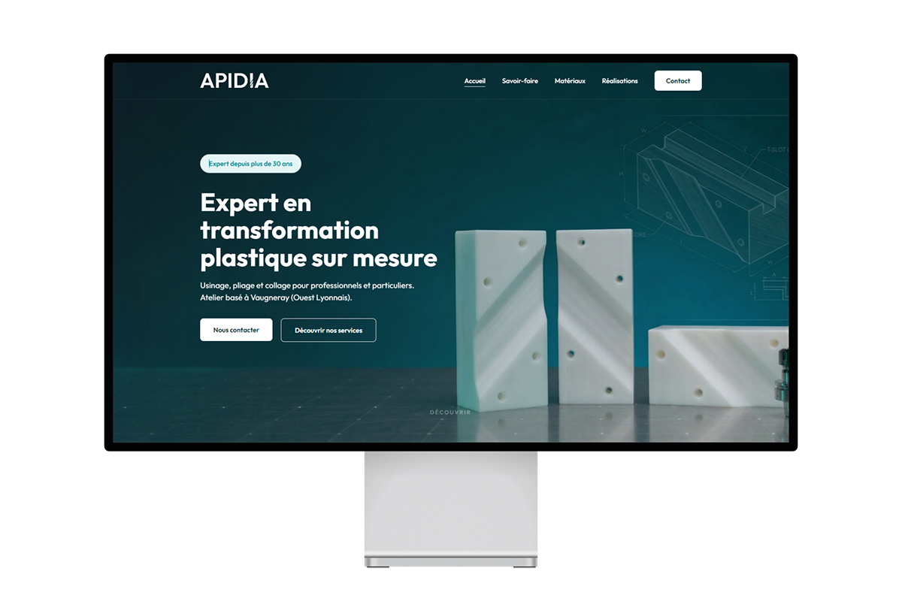

New website and logo refresh for a plastics company near Lyon. The whole color scheme comes from the updated logo. I used 3D-rendered backgrounds to tie the visuals to what they actually do: machining, bending, bonding.

Apidia machines, bends and bonds plastics for businesses and individuals. Their site looked old, didn't work on phones, and didn't really show what they do. The whole thing needed to go.
Start with the logo, then rebuild everything else around it. Refresh the mark, then build a site that shows their services clearly and makes quote requests simple.
3D renders and wireframe drawings as page backgrounds, the kind of visuals you'd see in SolidWorks. It immediately tells you what industry you're in. Colors pulled from the refreshed logo: technical teal-green, paired with a clean layout so nothing fights for attention.
New typefaces, new colors, but the logo's DNA is still there. The site follows the same logic. It looks current without pretending the company started yesterday.
Each service has its own page: machining, bending, bonding. The contact form is short and to the point so quote requests actually come in.
3D renders and wireframe backgrounds straight out of CAD software. You land on the homepage and instantly know it's a plastics engineering company.
{kind=link}
{kind=link}
{kind=link}
{kind=link}